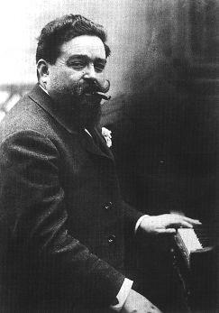

Tango en ré (1925)
Musique d'Isaac Albéniz (1860 -1909)
Tango du genre "Milonga"
|
 Albéniz est l'arrière-grand-père de Cécilia Attias ancienne épouse de Jacques Martin et deuxième épouse divorcée de l'ancien président de la République française Nicolas Sarkozy. |